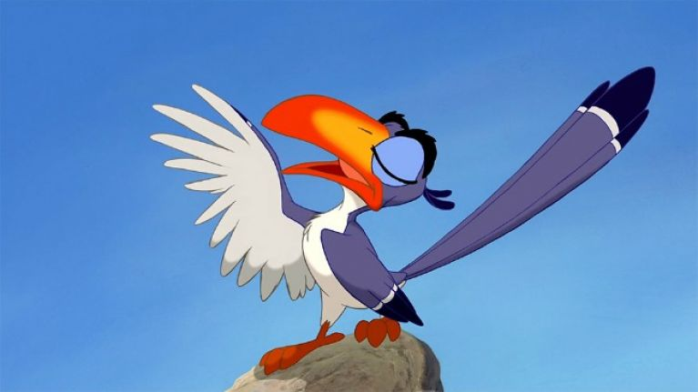

About Zazu
Zazu is a highly underrated character from the movie The Lion King. He is the king's right-hand man..er..bird. He loyaly serves the kingdom and tries his best to make sure everything is running smoothly.
Zazu takes his job seriously which leads others to think of him as a stick in the mud.
Zazu's Characteristics
- He's hard working
- He's loyal to Mufasa
- He can be a bit pompous
Zazu's Friends
It's hard to say if Zazu has "friends", but I'd like to think these guys are some of his friends.